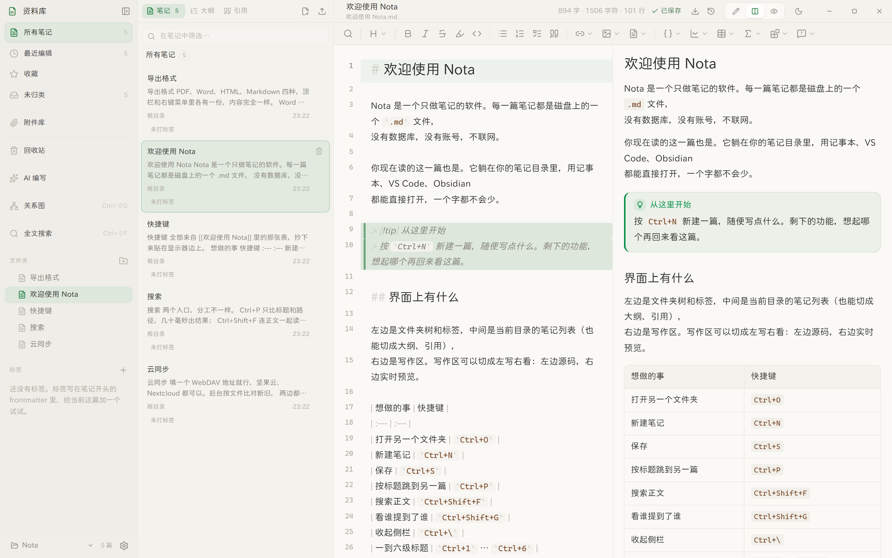
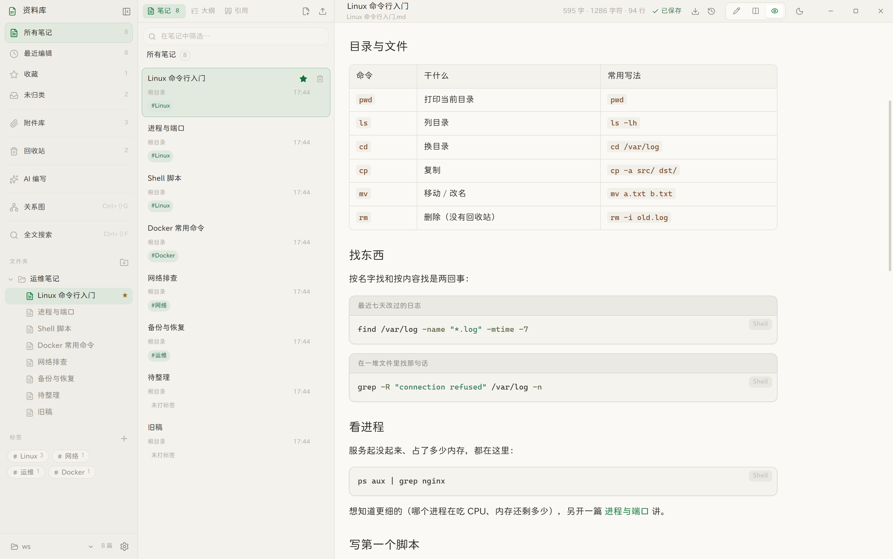
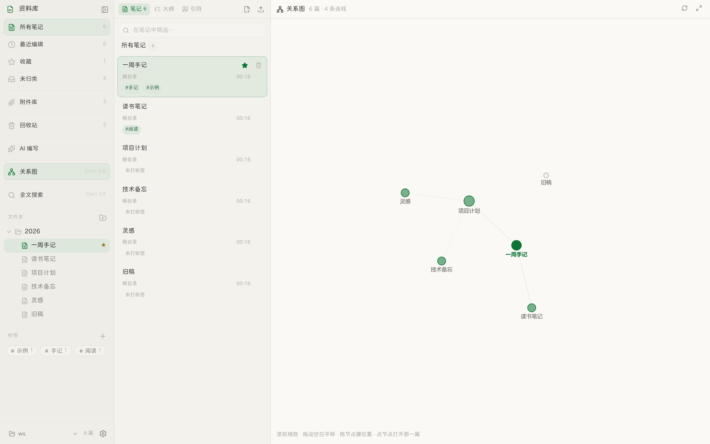
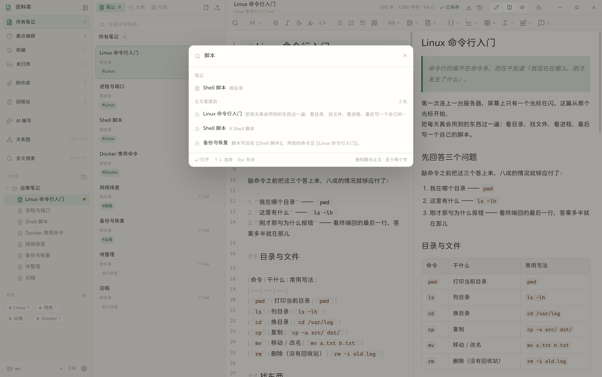
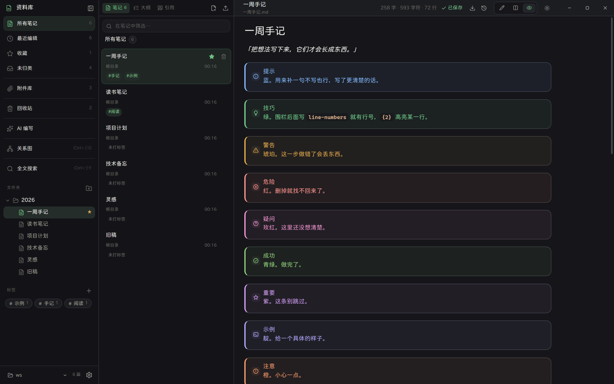

一个只做笔记的
笔记应用
文件躺在你自己的目录里，就是一份份普通的 Markdown。
不联网、不上传、不要账号 —— 换任何编辑器打开，都还是你写的那些字。
Windows 10 / 11 · 安装包约 70 MB

它把注意力留给内容
没有插件市场，没有强制注册，没有「协作邀请」。该有的编辑能力一个不少，不该打扰的一样都没有。
纯本地，也陪你上云
笔记就是你目录里的 .md 文件，断网照常写。想跨设备时填一个 WebDAV 地址——同步在后台按文件比对新旧，冲突会留底，谁的字都不会被悄悄覆盖。
双链与关系图
[[笔记]] 弹选择器选，不用手打；关系图把谁提到了谁画成连线。
所见即所写
分栏同步滚动、行号、代码高亮、补全。源码即文件，别的工具也认。
提示块与图表
十一种提示块轻重分明；Mermaid 配色跟深浅主题走，换主题会重画。
四种导出
Markdown / HTML / PDF / Word。公式走 MathML，图表转图像，Word 里也是规整排版。
可选的 AI 编写，可选的联网
接你自己的模型 —— 本机 Ollama 也行，任意 OpenAI 兼容接口也行。联网检索是应用替模型去查的，本地模型同样能用；不填密钥，这些功能连入口都不出现。
它长什么样
下面每一张都是真实界面截图，不是画出来的示意图。
左边写，右边看
分栏视图下源码和渲染结果同步滚动 —— 滚到哪儿，另一边就跟着到哪儿，点大纲也不会跳错位置。
- 标题锚点做双向映射，长文不漂移
- 代码块右上角常驻语言标识
- 预览里的待办可以勾，勾了会回写源码
阅读模式下，它像一篇写好的文章
表格有圆角、脚注有编号、代码块能带标题和行号、行内还能插标签和块 ID。这些不是「支持的语法清单」，是一篇真文章里本来就会有的东西。
- 高级代码块：加标题、加行号、高亮指定行
- Mermaid 图表配色跟主题走，不再是那片蓝紫
- 提示块十一种类型各一色相，需要强调时才用

关系图：谁提到了谁
列表能告诉你有 60 篇，但看不出哪篇是枢纽、哪几篇是孤岛。关系图把 [[双链]] 画成连线，孤立的笔记单独画成空心。
- 滚轮缩放、拖动平移、拖节点挪位置
- 双击节点打开那一篇，单击不跳，摆图时不会误触
- Ctrl+Shift+G 随手唤出

记得写了什么，忘了在哪一篇
Ctrl+P 只搜标题和路径，几十毫秒出结果；Ctrl+Shift+F 连正文一起搜，命中那一行直接给你看。
- 结果分两段：先标题后正文
- ↑↓ 选择、Enter 打开，全程不碰鼠标
- 「引用」页签反过来告诉你谁提到了这篇

深色不是把颜色反过来
深浅两套各自调过对比：纸张不是纯黑，强调色在暗底上单独调过亮度，图表的颜色也会重新画一遍。
- 六套强调色可换
- 代码高亮在深色下另配了一组颜色
- 导出永远是适合打印的浅色，不跟主题走

云同步，不托管
填一个 WebDAV 地址，Nota 在后台按文件比对新旧：本地改了推上去，云端改了拉下来。
- 冲突不覆盖：本地版本自动改名留底
- 启动时与每 10 分钟各同步一轮，也可以手动
- 密钥存本机；你的笔记躺在你的网盘里，不经过任何第三方服务器
现在就试试
Windows 10 / 11，64 位。装上就能用，不需要账号，也不会往后台挂任何东西。
双击后十几秒没出窗口，不是卡住。 Windows 会先把整个安装包扫一遍才放行；这个包没有代码签名证书，扫得比一般软件更久。 若弹出「已保护你的电脑」，点「更多信息 → 仍要运行」就行。 装的时候位置可以改，不想要快捷方式就选「直接运行」，一个文件两种用法。 装的时候还能顺便指定笔记存哪个文件夹 —— 选完继续装，第一次打开就落在那里。